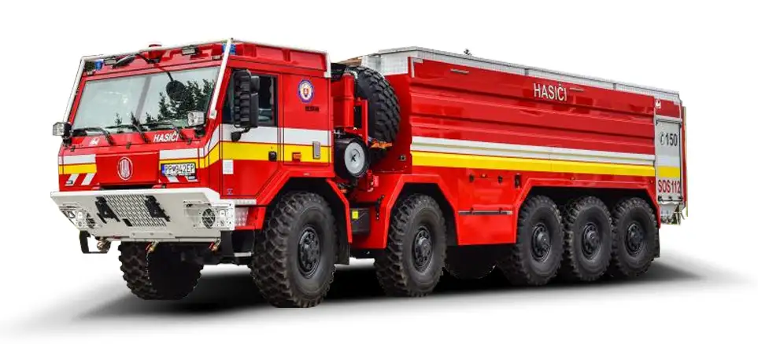

Price Range: $100k to $350k
Emergency vehicles are engineered to deliver speed, reliability, and durability when every second counts. Designed for first responders such as police, fire, and medical teams, these vehicles are equipped with advanced safety systems, high-performance engines, and specialized features to handle urgent situations. Built to navigate through challenging conditions and reach critical destinations quickly, our emergency vehicles ensure that help always arrives on time.
Back to Home